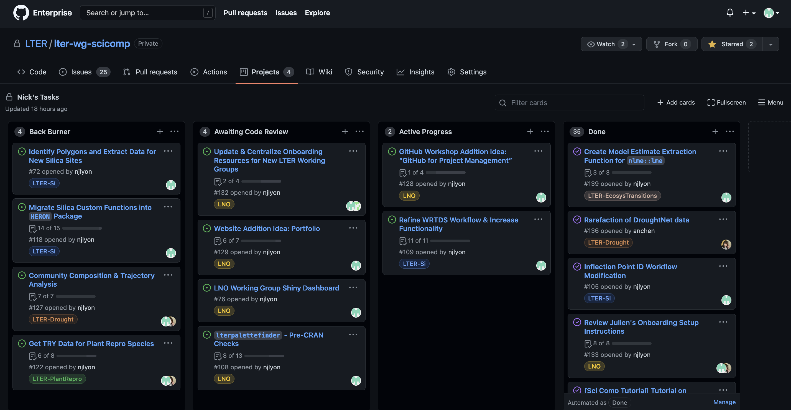
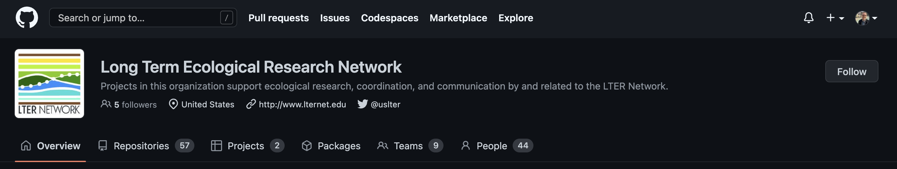
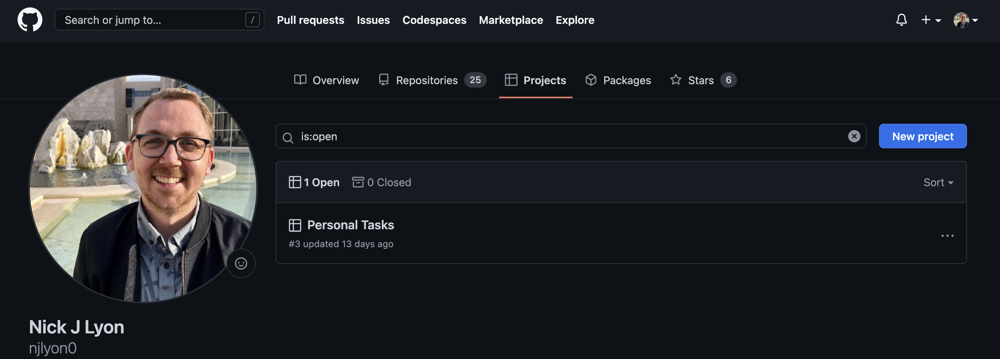
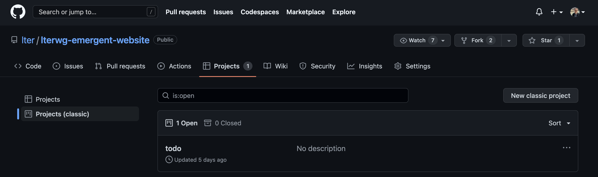

GitHub Projects
What is a Project?
Projects are GitHub’s primary strategic project management tool. While issues can be very useful for particular tasks, they are less valuable for making larger-scale plans and tracking evolving priorities. A Project acts as an umbrella that includes many issues and tracks their inter-relationships and where they fit in a bigger-picture view of a project.
Using Projects
Within the team that created this workshop, we use GitHub Issues to track and document each task that we do for a working group. We then use a GitHub Project to let each team member track all of their Issues and ensure that we rotate through which group we are helping. This guarantees equitable effort for each working group and allows each team member to balance all of the tasks on their docket at any given moment.
See below for a screencap of what such a Project looks like for one team member.

When using a Project you can add or remove the columns (the above example has four columns) and individual issue “cards” can be clicked and dragged among columns. You can also automate a column so that Issues that meet certain criteria are automatically moved to a particular column (e.g., Issues added to this Project are automatically moved to the “Done” column).
Maximizing Project Utility
It may go without saying, but Projects are at their most valuable as project management tools when you make effective use of GitHub Issues. Specifically, the three Issue capabilities that will benefit your adoption of Projects are as follows:
- Giving Issues clear and short titles
- “Assigning” Issues to particular users
- Using labels to group Issues into useful categories
If your team is considering these three points, then adopting GitHub Projects will further empower your ability to track your internal tasks over time. Feel free to consult our page on Issues for more information!
Project Locations
Projects can be created in one of three places with meaningful differences for each:
- A Project can be created for an Organization
- A Project can be created for a User
- A Project can be created for a Repository
Organization Projects

A Project created for an Organization allows all GitHub users with access to that organization to add issues to the Project and move them around within a Project. This can be really valuable because no special settings need to be touched in order to allow all users to meaningfully interact with issues. Both LTER and NCEAS have existing organizations that can support Projects created for working groups.
- Supports issues from any repository
- Editable by any user in the organization
User Projects

A Project created within a particular user’s “self” can also accept issues from any repository. However, the Project can only be interacted with by the user unless that user modifies their settings to specify other users who are granted special access to the Project.
- Supports issues from any repository
- Editable by only this user*
- * Unless that user tweaks their settings to allow other specified users to have admin-level powers in that Project
Repository Projects

A Project created within a repository can only be used for issues posted on that repository and by users with access to the the repository. This is the most narrowly-defined type of Project. That said, it can be very valuable if you anticipate (1) that the repository that “owns” this Project will involve many large goals that would require the level of project management supported by GitHub Projects and (2) that these tasks will never grow to involve other repositories.
- Supports issues only from that repository
- Editable by any user with access to the repository